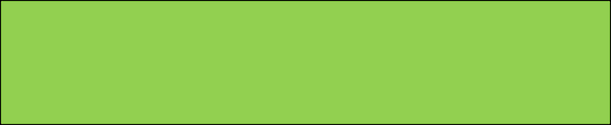
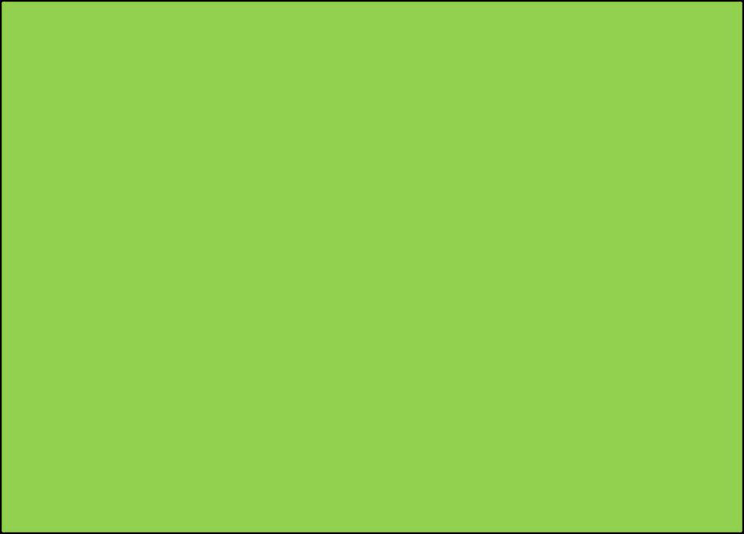
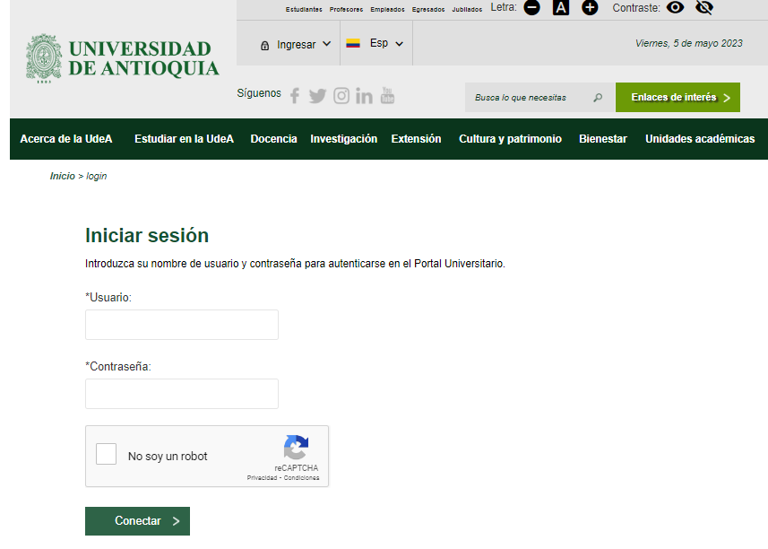
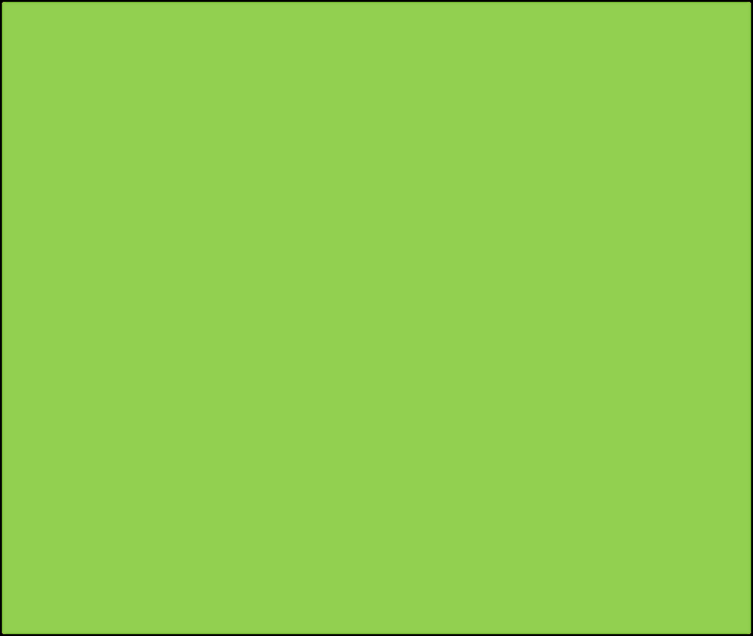
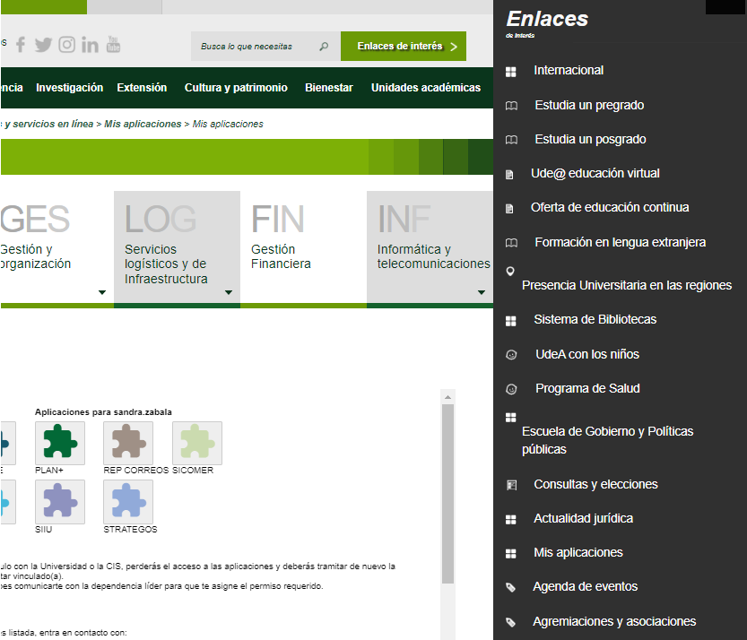
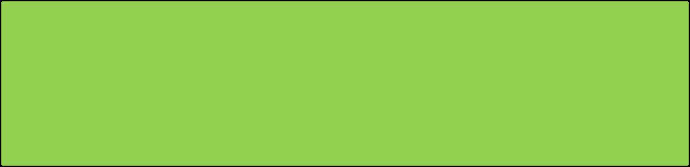
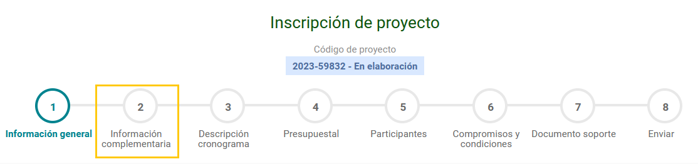

GUÍA PARA LA INFORMACIÓN COMPLEMENTARIA DE LOS PROYECTOS EN EL SIIU
Información de Control Documental
Código: VI-GU-16
Versión: 01 / 29-ABR-2024
Aviso legal institucional: La impresión o copia digital de este documento se considera "COPIA NO CONTROLADA". Solo se garantiza la actualización de la documentación en el sitio oficialhttp://www.udea.edu.co.
Contenido
- Definición
- Contenido
- 2.1. Requisitos para la matrícula de la información complementaria en los proyectos
- 2.2. Usuarios que intervienen en el proceso
- 2.3. Ingreso al SIIU
- 2.4. Matrícula de información complementaria para los proyectos
- Nota de cambio
- Registro de Control y Firmas
1. Definición
Este documento se ha elaborado con el fin de ayudar y capacitar investigadores principales o responsables del proyecto para el Sistema de Información para la Investigación Universitaria – SIIU en la matrícula de proyectos. Dado lo anterior se aclara que esta guía no hace parte de la normativa universitaria y solamente se debe utilizar como una herramienta que orienta los pasos que se debe seguir.
2. Contenido
2.1. Requisitos para la matrícula de la información complementaria en los proyectos
- El usuario con rol de investigador principal o responsable del proyecto debe estar registrado en el portal institucional y tener acceso a SIIU.
- El proyecto debe presentar en la matrícula la pestaña Información complementaria para diligenciar los campos requeridos.
2.2. Usuarios que intervienen en el proceso
- Usuario con rol Investigador Principal o Responsable del Proyecto.
2.3. Ingreso al SIIU
El investigador principal o responsable del proyecto debe autenticarse en el portal de la Universidad de Antioquia, http://www.udea.edu.co, buscar la opción aplicaciones y entre ellas elegir el SIIU, así:
- Ingresa al portal de la Universidad:
http://www.udea.edu.co, en el encabezado seleccione Ingresar >> Iniciar sesión (Ver figura 1).
 Figura 1 - Ingreso al portal de la Universidad de Antioquia
Figura 1 - Ingreso al portal de la Universidad de Antioquia
- Aparece pantalla para ingresar su usuario y contraseña, seleccione No soy un Robot (el sistema le puede pedir realizar validaciones) finalmente presione clic en el botón CONECTAR. (Ver figura 2).

Figura 2 - Conectar al portal- Presione clic en la opción Enlaces de Interés y seleccione Mis aplicaciones, así:
Enlaces de interés → Mis aplicaciones. (Ver figura 3).
 Figura 3 - Enlaces de interés
Figura 3 - Enlaces de interés
- Se abrirá una ventana con las aplicaciones de la Universidad; seleccione SIIU. (Ver figura 4).

Figura 4 - Seleccione SIIU> Se abre una nueva ventana con la aplicación SIIU. Si la ventana no abre inmediatamente, es necesaria la configuración de ventanas emergentes en el navegador y seleccionar la opción que autorice el SIIU.
2.4. Matrícula de información complementaria para los proyectos
En la matrícula de proyectos aparece en el tren de datos la opción 2 Información complementaria (esta opción aparece si en la configuración del sistema para la convocatoria se habilitó dicha pestaña). Tal como muestra la figura 5.
El tren de datos de la inscripción comprende: 1. Información general 2. Información complementaria 3. Descripción / cronograma 4. Presupuestal 5. Participantes 6. Compromisos y condiciones 7. Documento soporte 8. Enviar

Figura 5 - Pestaña Información complementariaUna vez ingrese a la pestaña de información complementaria, el sistema le presenta la ventana donde podrá agregar: - Objetivos de desarrollo sostenible / milenio (ODS) - Focos de Misión de Sabios - Agenda G8 - Objetivo socioeconómico del proyecto
Obligatoriedad de diligenciamiento
Tenga en cuenta que estos campos son obligatorios y debe diligenciarlos para que pueda enviar su proyecto al centro. El sistema le muestra un resumen de la selección realizada, tal como muestra la figura 6.

Figura 6 - Resumen Información complementariaAgregar los objetivos de desarrollo sostenible – ODS
Ubíquese en la opción Agregar objetivos del milenio y despliegue la pestaña vertical.
El sistema permite agregar uno o varios objetivos del milenio / ODS. En caso de no seleccionar ningún ítem, el sistema le indicará que falta por seleccionar el registro y no le permitirá enviar el proyecto al centro. Tenga presente que puede seleccionar la opción No aplica en caso de que sea necesario. (Ver figura 7).

Figura 7 - Objetivos desarrollo del milenio| Ítem | ODS (Objetivos de Desarrollo Sostenible / Milenio) |
|---|---|
| Objetivo 1 | Poner fin a la pobreza en todas sus formas en todo el mundo |
| Objetivo 2 | Poner fin al hambre |
| Objetivo 3 | Garantizar una vida sana y promover el bienestar para todos en todas las edades |
| Objetivo 4 | Garantizar una educación inclusiva, equitativa y de calidad y promover oportunidades de aprendizaje durante toda la vida para todos |
| Objetivo 5 | Lograr la igualdad entre los géneros y empoderar a todas las mujeres y las niñas |
| Objetivo 6 | Garantizar la disponibilidad de agua y su gestión sostenible y el saneamiento para todos |
| Objetivo 7 | Garantizar el acceso a una energía asequible, segura, sostenible y moderna |
| Objetivo 8 | Promover el crecimiento económico inclusivo y sostenible, el empleo y el trabajo decente para todos |
| Objetivo 9 | Construir infraestructuras resilientes, promover la industrialización sostenible y fomentar la innovación |
| Objetivo 10 | Reducir la desigualdad en y entre los países |
| Objetivo 11 | Lograr que las ciudades sean más inclusivas, seguras, resilientes y sostenibles |
| Objetivo 12 | Garantizar modalidades de consumo y producción sostenibles |
| Objetivo 13 | Adoptar medidas urgentes para combatir el cambio climático y sus efectos |
| Objetivo 14 | Conservar y utilizar sosteniblemente los océanos, los mares y los recursos marinos |
| Objetivo 15 | Gestionar sosteniblemente los bosques, luchar contra la desertificación, detener e invertir la degradación de las tierras, detener la pérdida de biodiversidad |
| Objetivo 16 | Promover sociedades justas, pacíficas e inclusivas |
| Objetivo 17 | Revitalizar la Alianza Mundial para el Desarrollo Sostenible |
| 18 | No aplica |
Agregar focos de la Misión de Sabios
Ubíquese en la opción Agregar focos de misión de sabios y despliegue la pestaña vertical.
El sistema permite agregar uno o varios focos de misión de sabios. Si no selecciona ningún ítem, el sistema le indicará que falta por seleccionar el registro y no le permitirá enviar el proyecto al centro. Se puede seleccionar la opción No aplica si el proyecto no se enmarca en ninguno de los focos. (Ver figura 8).
Figura 8 - Agregar focos de misión de sabios
| Ítem | Focos de la Misión de Sabios |
|---|---|
| 1 | Biotecnología, Bioeconomía y Medio Ambiente |
| 2 | Ciencias Básicas y del Espacio |
| 3 | Ciencias de la Vida y la Salud |
| 4 | Ciencias Sociales, Desarrollo Humano y Equidad |
| 5 | Energía Sostenible |
| 6 | Industrias Creativas y Culturales |
| 7 | Océano y Recursos Hidrobiológicos |
| 8 | Tecnologías Convergentes – Nano, Info y Cogno- Industrias |
| 9 | No aplica |
Agregar Agenda G8
Ubíquese en la opción Agregar Agenda G8 y despliegue la pestaña vertical.
El sistema permite agregar uno o varios ítems de Agenda G8. Si no se selecciona ningún ítem, el sistema indicará que falta por seleccionar el registro bloqueando el envío al centro. Se puede marcar la opción No aplica si corresponde. (Ver figuras 9 y tabla).
 Figura 9 - Agregar agenda G8
Figura 9 - Agregar agenda G8
| Área | Subáreas / Líneas Agenda G8 |
|---|---|
| 1. Organizaciones y Territorios Competitivos | 1.1. Territorios inteligentes para la vida 1.2. Tecnologías Informáticas habilitadoras de la industria 4.0 1.3. Transformación digital |
| 2. Naturaleza y recursos | 2.1. Recursos y servicios ambientales 2.2. Prevención y control de contaminación 2.3. Tecnificación del agro 2.4. Generación, almacenamiento y gestión de energía |
| 3. Sociedad y cultura | 3.1. Construcción, preservación y gestión del patrimonio 3.2. Industrias culturales y creativas 3.3. Apropiación cultural 3.4. Hábitat, paz y ciudadanía |
| 4. Salud y vida | 4.1. Salud inteligente: Inteligencia en salud 4.2. Precisión diagnóstica y tratamiento eficaz 4.3. Educación, promoción y prevención en salud 4.4. Nutrición y agroalimentación con alto valor agregado |
| 5. No aplica | 5.1. No aplica |
Agregar objetivo socioeconómico
Ubíquese en la opción Agregar objetivo socioeconómico y despliegue la pestaña vertical.
Selección única
El sistema permite agregar solo un objetivo socioeconómico (a diferencia de los ODS, Misión de Sabios y Agenda G8 que permiten selección múltiple). En caso de no seleccionar ningún ítem el sistema le indicará que falta por seleccionar el registro. Puede seleccionar la opción No aplica en caso de que sea necesario. (Ver figura 10).

Figura 10 - Agregar Objetivo socioeconómico| Ítem | Objetivo Socioeconómico |
|---|---|
| 1 | Exploración y explotación del medio terrestre |
| 2 | Medio ambiente |
| 3 | Exploración y explotación del espacio |
| 4 | Transporte, telecomunicaciones y otras infraestructuras |
| 5 | Energía |
| 6 | Producción y Tecnología industrial |
| 7 | Salud |
| 8 | Agricultura |
| 9 | Educación |
| 10 | Cultura, ocio, religión y medios de comunicación |
| 11 | Sistemas políticos y sociales, estructuras y procesos |
| 12 | Avance general del conocimiento: I+D financiada con los fondos generales de las universidades |
| 13 | Avance general del conocimiento: I+D financiada con otras fuentes (otra investigación civil) |
| 14 | Defensa |
| 15 | No aplica |
Guardar y continuar con la matrícula
Una vez haya seleccionado cada ítem: 1. Presione el botón GUARDAR para almacenar los registros seleccionados para el proyecto. 2. Presione el botón SIGUIENTE para continuar con el paso 3 de la matrícula del proyecto (Descripción cronograma). Tal como muestra la figura 11.

Figura 11 - Botón Guardar para almacenar3. Nota de cambio
- No aplica para la primera versión.
Registro de Control y Firmas
| Rol | Nombre | Cargo / Dependencia | Fecha |
|---|---|---|---|
| Elaboró | Sandra Patricia Zabala Orrego | Contratista, Vicerrectoría Investigación | 16-FEB-2024 |
| Revisó | Kerlin Yohana Bedoya Agudelo | Analista de Procesos, División de Arquitectura de Procesos | 29-ABR-2024 |
| Aprobó | Gloria Valencia Bustamante | Asistente, Vicerrectoría de Investigación | 29-ABR-2024 |